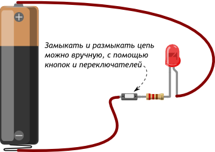
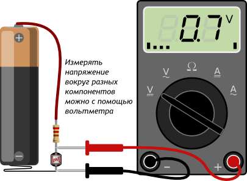
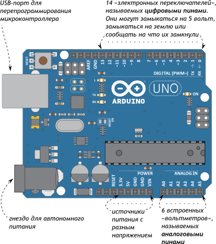

Управление электричеством
Если постоянно и монотонно трансформировать электроэнергию в другую форму, область применения электричества будет сильно ограничена. Огромный мир разнообразных полезных устройств открывается, если научиться контролировать и взаимодействовать с электричеством. Для этого существует несколько способов.
Управление вручную
 Автоматическое управление
Замыкать и размыкать цепь, измерять напряжение также можно, не вручную, а автоматически, по заданному алгоритму при помощи запрограммированного микроконтроллера.
Существуют «сырые» микроконтроллеры, выполненные в виде одной микросхемы. Они дёшевы при массовом производстве, но их программирование и правильное подключение — нетривиальная задача для новичка.
Чтобы решить эту проблему, существуют готовые платы или, как ещё говорят, вычислительные платформы. Они делают процесс взаимодействия с микроконтроллером очень простым. Типичным представителем этого семейства являются платы Arduino.
